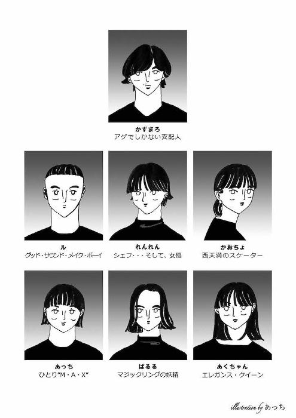
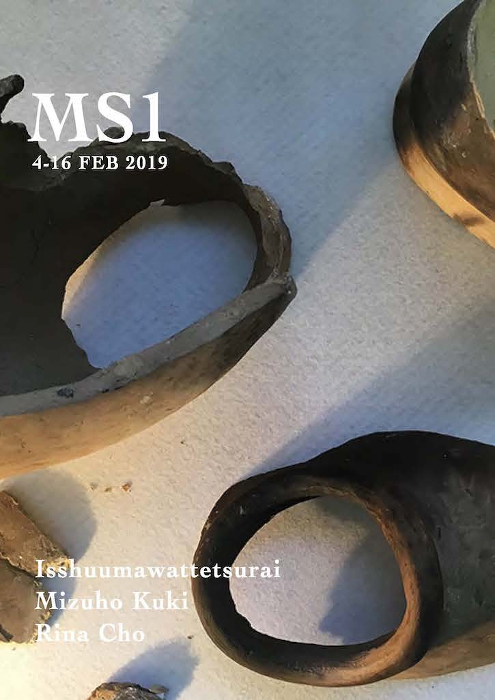
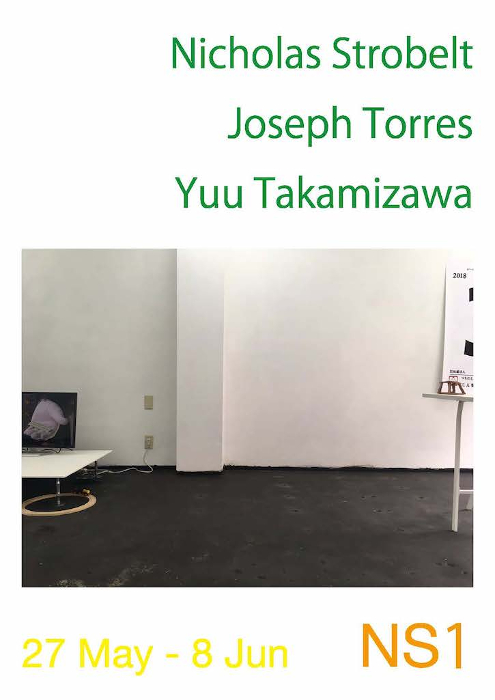
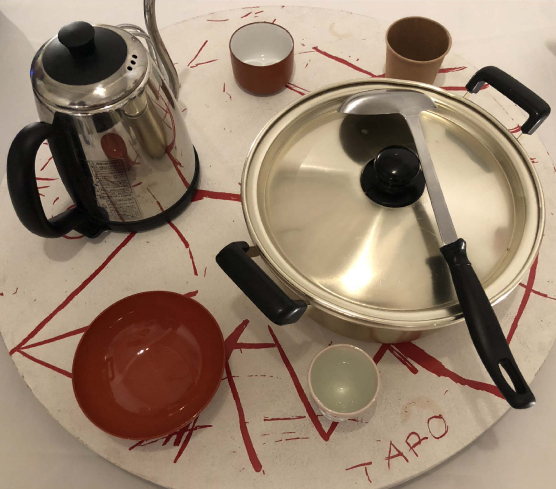

Index of 2019
We are
 Hello
Hello 私たちの目標
私たちの目標 TWS1
TWS1-  Menu
 HF+S1
HF+S1-  MS1
Hello 私たちの目標 TWS1 HF+S1
Hello
西天満のペフのはじまり・Archive of 2017-2018
PDF
私たちの目標
大世界・Our Goal
TWS1
by Fumio Kohama, Stefan Alexander, Shintaro Matsuo | text by Ray Washio
Menu
ペフ喫茶の写真とメニュー
PDF
HF+S1
by Masami Baba, Shoji Funakawa, Nobuto Okawahara, Gaku Kurokawa
MS1
by Isshuumawattetsurai, Mizuho Kuki, Rina Cho
6 PDFs / Total 115 pages
ズッ友
 なかよしフェアー
なかよしフェアー Best Friends from France
Best Friends from France-  NS1
 Green People
Green People Tongue finishes back at the root of itself
Tongue finishes back at the root of itself 西天満のペフ
西天満のペフ
なかよしフェアー Best Friends from France Green People Tongue finishes back at the root of itself 西天満のペフ
なかよしフェアー
ホセとエミについて・Beauty Spot | 美人[BEAST]
PDF
Best Friends from France
日仏の友情 100%の友達 新しい冒険への道
NS1
K by 爆破片非安全製造団 | Friendly Foam Shop Osaka Branch | Coins
Green People
緑の人 | この部屋での時間のつぶし方 version 0.2 | またね
Tongue finishes back at the root of itself
by Ferran Pla, Ana Martinez Fernandez
PDF
西天満のペフ
2019年9月をもって西天満のペフは終了しました。
PDF
6 PDFs / Total 196 pages
Peace for Future


OTO building
音ビルって何？ | 創造的場づくり助成 2019 - 2021
i choose
The Answers are always inside of you
プレイタイムズ
a place of pray/play for us
and more
5 PDFs / Total 111 pages
レシピ
 ジンジャーシロップ
ジンジャーシロップ レモンシロップ
レモンシロップ ホワイトソース
ホワイトソース ジャパメックス・タコス
ジャパメックス・タコス 四川省風バインミーサンドウィッチ
四川省風バインミーサンドウィッチ マルセイユスタイルモーニングセット
マルセイユスタイルモーニングセット サマーコーンスープ
サマーコーンスープ-  白湯
ジンジャーシロップ レモンシロップ ホワイトソース ジャパメックス・タコス 四川省風バインミーサンドウィッチ マルセイユスタイルモーニングセット サマーコーンスープ・レジデンスアーティストなどから伝授された8つのレシピを収録
8 PDFs / Total 58 pages
おまけ
 Archive of pe hu talk
Archive of pe hu talk- 食べたもの、ほか
 manga and something
manga and something Sign
Sign Lynx
Lynx 新鑑真と上海
新鑑真と上海 #magicringmakefriendship
#magicringmakefriendship 同感覚祭
同感覚祭- etc.
Archive of pe hu talk manga and something Sign Lynx 新鑑真と上海 #magicringmakefriendship 同感覚祭・ペフの運営メンバーによる連載「ペフトーク」「食べたもの、ほか」「manga and something」、 ペフのテーマソング「Sign」の音源など
Archive of pe hu talk by Masamichi Furukawa
- Age of
- GAFA
- 中国AIアナウンサーから考える今後の世界
- 2018 Best
- 千紗子と純太の謎
[Guest: BIOMAN] - ナイスショップスー
[Guest: ナイスショップスー] - お茶会トーク:ちょっと豊かになるモノ・コト/かけた曲
[Guest: seaketa | INDGMSK | thaithefish] - リアル・オーガナイザーが消える未来
食べたもの、ほか by ハマジ(KK manga)
manga and something by ayami konishi
Lynx by Dove
- 作曲/編曲:Dove
- mix/mastering:Le makeup
Sign ペフの歌
- 作曲/編曲:Le makeup
- 作詞:中尾香織 | ささじまかずま
新鑑真と上海
#magicringmakefriendship
同感覚祭
16 PDFs / 2 videos / 2 tracks